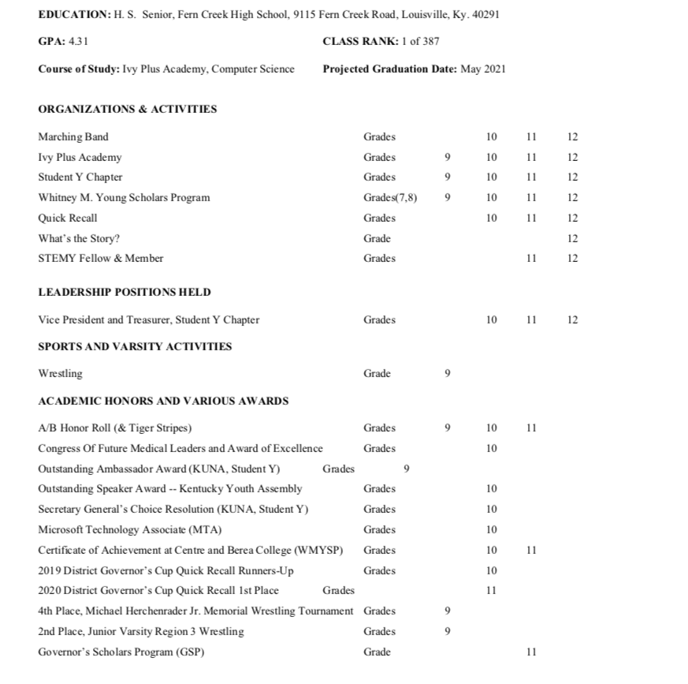
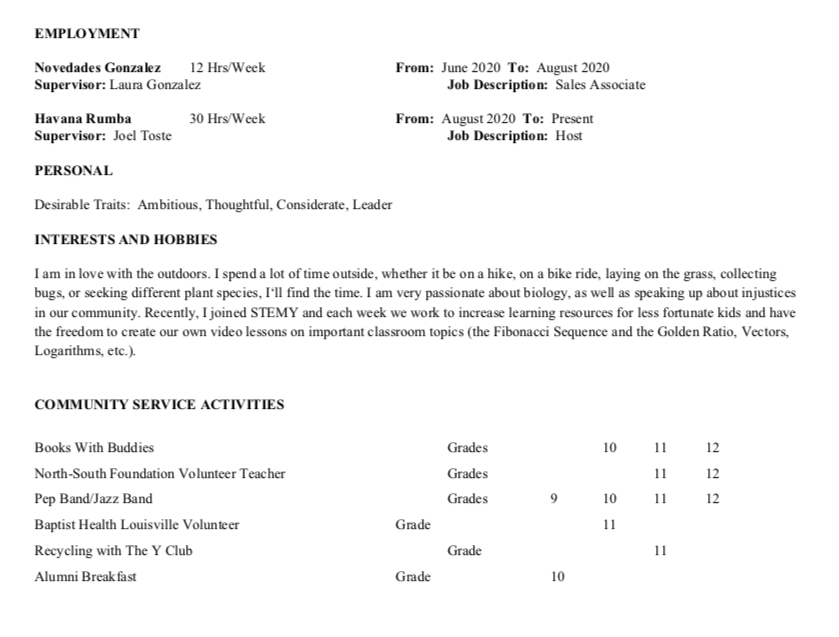

| Honor | Grade |
|---|---|
| 2019 National Student Leadership Conference Invitation |
I was selected to be a representative of Fern Creek High School at the National Student Leadership Conference, a career-focused leadership conference for outstanding high school students. This conference would give me a hands-on experience on a college campus, and would nurture my leadership skills to their full potential. |
| Tiger Stripes Award and Recognition |
This award and recognition are representative of my impact on the overall academics of the school and it shows that the school values the hard work that I put into my classes. |
| Invitation to Beta Club and National Honor Society |
An invitation to these clubs entails multiple requirements, including a 3.0, as well as no behavior referrals, and near-perfect attendance. Unfortunately, I was unable to participate because a lck of money to pay to join these clubs. |
| Governor's Scholars Program (GSP KY) |
I participated in this highly selective program that took my application all the way to the state-level, which demonstrated my excellence in every area, and allowed me to connect with programs outside of my area, as well as spending an entire week (usually 5, cut shorts due to COVID) with people from all over the state, and learning about myself and my community. I also got to speak with Gov. Andy Beshear! |
| Award | Grade |
|---|---|
| Congress Of Future Medical Leaders and Award of Excellence |
This award is a reflection in my dedication to my coursework and my continued demonstrated interest in the field of medicine. |
| Outstanding Ambassador Award -- Kentucky United Nations Assembly |
The Kentucky United Nations Assembly is a gathering of multiple delegations who demonstrate their knowledge as representatives of a country , and participate in writing resolutions that address conflicts or issues at the United Nations level, almost like a mock-government. This award helped to demonstrate my ability to stand out from a group of students, and it portrays my ability to represent and argue in favor of an underrepresented country. |
| Outstanding Speaker Award -- Kentucky Youth Assembly |
I look back now and realize that this award represents my rapid growth in an area that I quickly grew passionate about, and my ability to shine and present quality work when I put my heart and soul to the task. This award represents the passion I have for presenting, and my ability to thrive and prepare under pressure, and assure growth in any situation. |
| Microsoft Technology Associate (MTA) |
In my computational thinking class last year, our teacher was confident that a good handful of students would be able to pass take and pass the MTA, or the Microsoft Technology Associate for the Python coding language. This is a demonstration of my hard work learning and implementing the python language, and also my hard work in computer science. |
| Certificate of Achievement in the Whitney M. YOUNG Scholars Program at Centre College and Berea College |
YOUNG Scholars program, I applied and was chosen my sophomore year to attend Berea College summer institute, where we would live on campus for two weeks and take classes. I received the Certificate of Achievement from both colleges, granting me some college credit hours, as well as recognition as a student of excellence. This shows that I will stand out in any environment, even in a difficult one, additionally portraying my strength of character and perseverance in completing all assignments on time and with quality work |
| Secretary General’s Choice Resolution (Kentucky United Nations Assembly) |
At the Kentucky United Nations Assembly , the Secretary General’s Choice Resolution is hand-picked by the student leader of the conference as the best of the best, after a one-on-one meeting with them. We received a certificate and had to present our resolution in front of the entire conference of more than 1000 students. This award is important to me because after putting hours of hard work into our resolution, we were chosen as the best in the entire conference. |
| 2019 District Governor’s Cup Quick Recall Runners-Up |
After hours of studying, our payoff was getting second place in the district governor’s cup, which meant we would be moving on to regionals. Quick Recall is a trivia-style competition tests extensive knowledge of specific subject areas -- math, science, social studies, language arts, and arts and humanities. Our team’s ability to answer questions quickly and correctly led to our triumph and our placement as second. |
| 2020 District Governor's Cup Quick Recall Winners (1st Place) |
Very proud of our first place win! I contributed to this by answering multiple questions correctly in the first round that we won, and in the final round that decided our placement, mainly in my focus area of language arts and arts and humanities. |
| 4th Place at the Michael Herchenrader Jr. Memorial Wrestling Tournament |
As a new wrestler, I was working extremely hard to be at the level of the experienced wrestlers that I would encounter. It was an ecstatic feeling that ran throughout my entire body, and I felt successful for the first time as a wrestler. |
| 2nd Place, Junior Varsity Region 3 Wrestling |
My coach forced all of the members of the team to participate in both the JV and Varsity tournaments for regionals. Sure enough, my first opponent was tough, but I was able to best him. It was especially difficult because I kept having to run back and forth between Varsity and JV. |
| Activities | Descriptions |
|---|---|
| Student Y Chapter |
As a part of my Student Y Chapter, I have been attending Kentucky Youth Assembly and Kentucky United Nations Assembly conferences since 9th grade. KYA and KUNA are three-day mock student government conferences that allow students to argue on recent political issues regarding the Kentucky government or representing a country as a delegation, and regarding the United Nations. I was a bill author my freshman year, and along with my two teammates, we wrote a bill on how Kentucky could better its environment through recycling. We studied endlessly and created a program which we thought was spot-on, although it was defeated in the Senate. |
| Marching Band |
Marching band has created life long friends through the power of music, and has taught me to give my all in whatever I do. Marching band has allowed me to develop my character in ways I never thought were possible. I am a proud member of the Fern Creek Tiger Pride Marching Band. And yes, marching band is a sport, and a very demanding sport at that. |
| Jazz Band |
Right after Marching Band season was over, it was time for Jazz Band. I learned about Jazz band my freshman year through some of my friends who were in it, and since I didn’t want to lose my ability to play an instrument, I joined Jazz band. I was immediately welcomed despite the fact that I was not a part of the in school band, and everybody was excited that another trombone would be added to the small trombone section. There I met my music mentor and friend Kalvin, who would teach me everything that I wouldn’t be learning because I wasn’t in the school band. He helped me with Music theory, and learning the difference between playing straight eighth notes in Jazz and swing eighth notes. Over the years in Jazz band, we’ve built a large repertoire of music, including songs like Gloria Estefan’s “Turn the Beat Around,” and Duke Ellington’s “Mood Indigo.” |
| Pep Band |
Pep Band is the official name of the conglomeration of students from Marching band that play at pep rallies and basketball games. We have to stay after hours until around 10pm on days where we have basketball games, and we have to leave class early to prepare for pep rallies. The difficult thing about Pep Band is that all of our music has to be memorized on our own time, and we don’t gather very often to practice Pep band music. |
| Whitney M. Young Scholars Program (Lincoln Foundation) |
I have become more open and accepting of myself through the experiences that I’ve had with the Lincoln Foundation and the WYSP. I have to be a representative of the Latinx community, a representative of the LGBTQ+ community, and a representative of the best version of myself, so that I can make the program proud. |
| Quick Recall |
As a part of the Quick Recall team in middle school, I felt isolated because I wasn’t exceptionally good at anything. As a sophomore, I decided to try again, per my history teacher and Quick Recall coach, and joined the team. Quick Recall pits school team against school team and uses buzzers that allow the fastest student to answer first in trivia based matches. What makes Quick Recall challenging is its specificity. |
| Wrestling Team (106 lbs.) |
I have always been told that I’m unathletic, and that I look like a stick. As someone who hates sports, I don’t know why I thought joining the wrestling team was a good idea. But, nonetheless, when someone told me that the wrestling team needed someone to fill in their position at the 106lbs spot, I felt as if it was destiny for me to join the wrestling team. I learned the basics of wrestling -- tackling, take-downs, pins, even attending a wrestling camp on a Saturday to better myself. During my first competition, I was so nervous that I began to shake. As soon as I got on that mat and the bell sounded, adrenaline completely overtook my body. I couldn’t even remember how to grab a leg and pin. I did get fourth place at a tournament once -- it was after gruesome training with my wrestling partner. I wrestled with my friend who was one weight class above me, so that it was easier for me to take down people who were smaller than him. I won a few matches thanks to training with him, including where I placed at JV Regionals . |
| Books With Buddies |
As part of an English project, one of my close friends decided to pursue a service learning opportunity. She invited a select group of people to be part of a new service club -- Books With Buddies. Books with Buddies is a group which organizes book drives, but mainly, heads down to Fern Creek Elementary and reads books to English Second Language students in an attempt to better their understanding of the English language, and provide extra help outside of class. She was from Mexico, and didn’t know any English. At first she was shy, but in the coming weeks, she’d open up to me. A few weeks later I took on 3 more students with agrop of 3 friends, and together, we played with alphabet activities and spelling, as well as the sounds that letters make. I have learned through Books With Buddies, how to become a better teacher, and how to positively impact the lives of young children. |